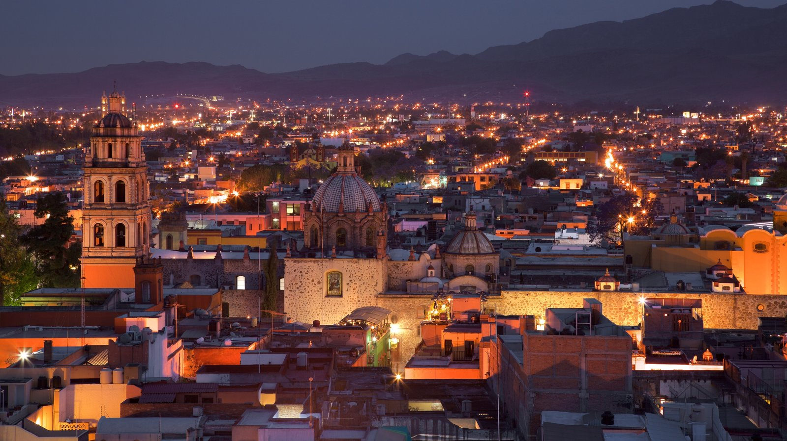

En la época prehispánica el territorio que ahora ocupa el estado de San Luis Potosí comprendía las áreas culturales de Mesoamérica y Aridoamérica.Su parte norte y centro-oeste fue habitada por las tribus otomíes y chichimecas, los cuales eran muchos grupos indígenas, principalmente cazadores y recolectores, lo que los obligaba a vivir sin asiento fijo; en el este y sureste aún habitan los grupos huasteco, xi, o'ui o pame y náhuatl.
En 1592, se descubrieron depósitos de oro y plata; con esto se inició el desarrollo de la zona. Los mineros se congregaron a poblar donde ahora se asienta la ciudad de San Luis Potosí, y Juan de Oñate fue nombrado el primer alcalde de «Pueblo de San Luis de Mezquitique».Se le dio el nombre de "San Luis Rey" en honor a Luis IX de Francia, y "Potosí" porque se comparó con las ricas minas de plata en la actual Bolivia, en espera de rivalizar con estas, aunque esto nunca se cumplió. En los siglos XVII y XVIII, franciscanos, agustinos, y jesuitas se establecieron y empezaron a edificar iglesias y edificios, muchos de las cuales aún siguen en pie y se han convertido en universidades y museos.
La fundación legal del pueblo de San Luis Potosí se hizo el 3 de noviembre de 1592, de acuerdo con el acta de fundación levantada por comisión que el virrey Luis de Velasco y Castilla dio a Miguel Caldera y Juan de Oñate, alcalde mayor de las minas del Potosí.

En 1786, a raíz de las reformas Borbónicas, se expide la Real Ordenanza de Intendencias expedida por el rey Carlos III, con la que se dividió administrativamente el Virreinato de la Nueva España en 12 Intendencias; siendo una de ellas la Intendencia de San Luis Potosí. La Intendencia de San Luis Potosí fue la más extensa del virreinato. Comprendía las provincias de Texas, Nuevo Santander y Coahuila, el Nuevo Reino de León y los distritos de Charcas, Altamira, de Catorce y Ramos.
A mediados de 1821, después de la Independencia de México, el general José Antonio Echavarri intimó al Intendente y al Ayuntamiento a la rendición de la plaza de San Luis al Ejército de las Tres Garantías de Iturbide. Ellos se sometieron a su exigencia, pues no había manera de resistir, y así se proclamó la Independencia de San Luis Potosí. Después, se dictó la primera Constitución Política del Estado de San Luis Potosí el 16 de octubre de 1826, y esta estuvo vigente hasta 1835 en que el Congreso Nacional decretó el sistema Centralista.Así desaparecieron las Legislaturas locales y los gobernadores fueron nombrados por el gobierno central. Esta situación subsistió hasta que se promulgó la Constitución de 1857.
La participación del estado potosino en la Invasión estadounidense en los años de 1846-1847 hizo que fuera llamado «San Luis de la Patria» por haber aportado gran cantidad de caudillos y elementos.En la Guerra de Reforma, la participación del estado potosino fue muy destacada, y durante la Intervención Francesa en 1863, la ciudad de San Luis Potosí fue declarada capital del país por el presidente Benito Juárez.
Durante el gobierno del emperador Maximiliano de Habsburgo, San Luis Potosí fue convertido en departamento. La ciudad estuvo en poder de los imperialistas hasta fines de 1866. En ese año fue inaugurada la línea telegráfica entre la ciudad de San Luis Potosí y la ciudad de México.
Fuente:Wikipedia.